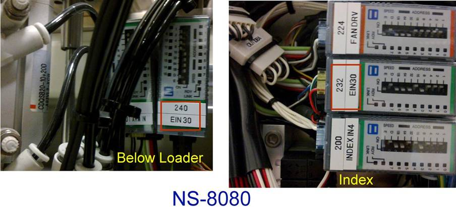

Service History
Subject: NS80-12 unable to start, door open error
Handler Model: NS-8040 UTAC(NS80-12, S/N: 181312)
Controller: RC520
Date: 29 Nov 2008(week 48)
Symptom
NS-8040 (NS80-12) unable to start, door open error.
Action
Advised customer to check all door sensor I/O, ok.
Check and swap remote I/O, ok.
Check I/O module EIN7(module for door sensor signal), ok.
Replaced I/O module EIN30 (located below Loader unit), problem resolved.
EIN7 consist of Input Bit( 104~110 connected to SKP452 E-stop board):
IN104, Tester Side 1 , Off when door close
IN105, Tester Side 2 , Off when door close
IN106, Loading Side 1 , Off when door close
IN107, Loading Side 2 , Off when door close
IN108, Unloading Side 1 , Off when door close
IN109, Unloading Side 2 , Off when door close
IN110, option Loader/Unloader cover , Off when door close
IN111, Input Air Pressure sensor, On when there is incoming air supply
As for Index side cover door it is Input Bit 284.
Cause
Faulty Input(Green) I/O Module EIN 30 of 16CH (located below Loader unit).
IN288 to IN301, START1, HOME1 to Front & Rear Operation panel.
IN299 is for Cover Open Switch.
(Where as EOUT30 Output to Front & Rear Operation Panel)
(EIN30 has 14CH & 15CH connected to EOUT30 )
Remarks

There are 2 I/O modules labeled with EIN30.
1st EIN30 (240) Input I/O Module 16 CH (located below Loader unit)
Page 26, Drawing No. Operation panel 2
2nd EIN30 (232) Input I/O Module 8CH (located at Index area)
Refer page 89 of Wiring diagram on EIN30.
Draw No: Remote I/O 16 (<= misleading actually is 8 CH)
Draw Name: Skip enable SW wiring
Sheet No: SKH0811-G16-3
EIN30 for Index( 8 CH ):
1) IN280, SKIP ENABLE
2) IN281, not use for NS-8040 (NS-8080/8160 Chamber Fan Driver Alarm)
3) IN282, ionizer for chamber(test area)
4) IN283, Ionizer for Loader & Unloader (Ionizer Alarm 2A & 2B)
5) IN284, Index Cover Unit
6) IN285, not use in NS-8040 (NS-8080/8160 Test Hand spring compliance sensor)
7) IN286, Index Cooling Fan for Z motor
8) IN287, Index Cooling Fan for U motor
Note: IN283 for Ionizer Alarm 2A & 2B are linked in series.
Email by Hidaka, 25 May 2011:
To change EIN30 label of 240 Input Module 16 CH (located at Loader area)
EIN30 -> OP IN
EOUT30 ->OP OUT
1) EIN 30 of 16CH (located below Loader unit) include Cover Open Switch(Input Bit 299)
2) EIN7 consist of Input Bit( 104~110 connected to SKP452 E-stop board) for Doors
3) EIN30 of 8 CH (located above Index) include Input Bit 284 for Index side cover door